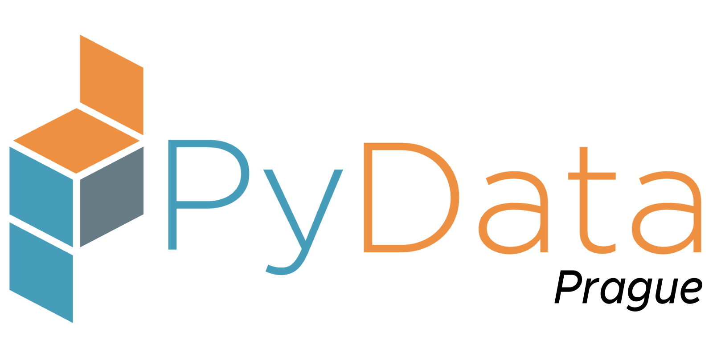

<!DOCTYPE html>
<html lang="en">
  <head>
    <meta charset="utf-8" />
    <meta name="viewport" content="width=device-width, initial-scale=1.0, maximum-scale=1.0, user-scalable=no" />

    <title>A practical guide to designing implants for pandas</title>
    <link rel="stylesheet" href="./css/reveal.css" />
    <link rel="stylesheet" href="_assets/css/white.css" id="theme" />
    <link rel="stylesheet" href="./css/highlight/vs.css" />
    <link rel="stylesheet" href="./css/print/paper.css" type="text/css" media="print" />

  </head>
  <body>
    <div class="reveal">
      <div class="slides"><section  data-markdown><script type="text/template">

<link rel="stylesheet" href="https://use.fontawesome.com/releases/v5.1.0/css/all.css" integrity="sha384-lKuwvrZot6UHsBSfcMvOkWwlCMgc0TaWr+30HWe3a4ltaBwTZhyTEggF5tJv8tbt" crossorigin="anonymous"/>

<!-- .slide: data-background="images/panda.png" -->

<div id="title-screen">

<h2>A practical guide to designing implants for pandas</h2>

<div style="height: 1em"></div>

<h4>PyData Prague<br/>3 February 2020<br/>Jan Pipek</span><br/></h4>


</div>
</script></section><section  data-markdown><script type="text/template">
### Who am I?

<div style="height: .5em"></div>

<ul>

<b>before</b>: (particle / medical) physicist

</ul>

<div style="height: .5em"></div>

<ul>

<b>now:</b> data scientist @ DTOne, Prague

</ul>

<p><i class="fab fa-twitter"></i> <i class="fab fa-github"></i>&nbsp;janpipek</p>


</script></section><section  data-markdown><script type="text/template">
<!-- <https://gbtimes.com/giant-panda-cubs-get-microchip-implants> -->


</script></section><section  data-markdown><script type="text/template">


<div style="height:100%"></div>

<table border="1" class="dataframe" style="font-size:50%">
  <thead>
    <tr style="text-align: right;">
      <th></th>
      <th>Name</th>
      <th>Diameter (Earth=1)</th>
      <th>Diameter (km)</th>
      <th>Mass (Earth=1)</th>
      <th>Mean Distance from Sun (AU)</th>
      <th>Orbital Period (years)</th>
      <th>Orbital Eccentricity</th>
    </tr>
  </thead>
  <tbody>
    <tr>
      <th>0</th>
      <td>Mercury</td>
      <td>0.382</td>
      <td>4878</td>
      <td>0.055</td>
      <td>0.39</td>
      <td>0.24</td>
      <td>0.2056</td>
    </tr>
    <tr>
      <th>1</th>
      <td>Venus</td>
      <td>0.949</td>
      <td>12104</td>
      <td>0.815</td>
      <td>0.72</td>
      <td>0.62</td>
      <td>0.0068</td>
    </tr>
    <tr>
      <th>2</th>
      <td>Earth</td>
      <td>1.000</td>
      <td>12756</td>
      <td>1.000</td>
      <td>1.00</td>
      <td>1.00</td>
      <td>0.0167</td>
    </tr>
    <tr>
      <th>3</th>
      <td>Mars</td>
      <td>0.532</td>
      <td>6787</td>
      <td>0.107</td>
      <td>1.52</td>
      <td>1.88</td>
      <td>0.0934</td>
    </tr>
    <tr>
      <th>4</th>
      <td>Jupiter</td>
      <td>11.209</td>
      <td>142800</td>
      <td>318.000</td>
      <td>5.20</td>
      <td>11.86</td>
      <td>0.0483</td>
    </tr>
    <tr>
      <th>5</th>
      <td>Saturn</td>
      <td>9.440</td>
      <td>120000</td>
      <td>95.000</td>
      <td>9.54</td>
      <td>29.46</td>
      <td>0.0560</td>
    </tr>
    <tr>
      <th>6</th>
      <td>Uranus</td>
      <td>4.007</td>
      <td>51118</td>
      <td>15.000</td>
      <td>19.18</td>
      <td>84.01</td>
      <td>0.0461</td>
    </tr>
    <tr>
      <th>7</th>
      <td>Neptune</td>
      <td>3.883</td>
      <td>49528</td>
      <td>17.000</td>
      <td>30.06</td>
      <td>164.80</td>
      <td>0.0097</td>
    </tr>
  </tbody>
</table>
</script></section><section  data-markdown><script type="text/template">
### I want to extend it...

<i class="fab fa-github"></i> <a href="https://github.com/janpipek/pandas_implants/">janpipek/pandas_implants</a>
</script></section><section  data-markdown><script type="text/template">
### Good, Bad or Ugly?

<h4 class="fragment" style="color: #aa0">Yes. <span class="fragment" style="color: #0a0">Yes. </span><span class="fragment" style="color: #00a">Yes. </span></h4>
</script></section><section  data-markdown><script type="text/template">
## Possible approaches

- Inherit **DataFrame** or **Series**

- Accessors for **DataFrame**, **Series** or **Index**

- **Extension types** and **arrays** <span style="opacity:0.7">(0.23+)</span>
</script></section><section  data-markdown><script type="text/template">
<!-- .slide: data-background="images/light-pandas.png" -->

## 1) Inheritance
</script></section><section  data-markdown><script type="text/template">
### Real-world example: geopandas

<p><i class="fab fa-github"></i>&nbsp;geopandas/geopandas</p>


</script></section><section  data-markdown><script type="text/template">
**GeoSeries**

geographical objects (such as points, lines and polygons)

<div style="height:1em"></div>

**GeoDataFrame** 

exactly one geometry column (of type GeoSeries). 

<div style="height:1em"></div>

\+ cartographical computations, plotting, etc.
</script></section><section  data-markdown><script type="text/template">
```python
world = geopandas.read_file(
    geopandas.datasets.get_path("naturalearth_lowres"))
world.loc[[143, 153]]
```

<div style="height:1em"></div>

<table border="1" class="dataframe">
  <thead>
    <tr style="text-align: right;">
      <th></th>
      <th>pop_est</th>
      <th>continent</th>
      <th>name</th>
      <th>iso_a3</th>
      <th style="background:#ffc">geometry</th>
    </tr>
  </thead>
  <tbody>
    <tr>
      <th>143</th>
      <td>64769452</td>
      <td>Europe ?</td>
      <td>United Kingdom</td>
      <td>GBR</td>
      <td style="background:#ffc">MULTIPOLYGON (((-6.19788 53.86757, -6.95373 54...</td>
    </tr>
    <tr>
      <th>153</th>
      <td>10674723</td>
      <td>Europe</td>
      <td>Czechia</td>
      <td>CZE</td>
      <td style="background:#ffc">POLYGON ((15.01700 51.10667, 15.49097 50.78473...</td>
    </tr>
  </tbody>
</table>
</script></section><section  data-markdown><script type="text/template">
```python
places = ["CreativeDock", "PyCon CZ"]
coords = ((14.401 50.077), (18.281, 49.82))
geometry = GeoSeries([Point(p) for p in coords])
places_df = GeoDataFrame({
    "name": places,
    "geometry": geometry
})
```

<div style="height:1em"></div>

<table border="1" class="dataframe">
  <thead>
    <tr style="text-align: right;">
      <th></th>
      <th>name</th>
      <th style="background:#ffc">geometry</th>
    </tr>
  </thead>
  <tbody>
    <tr>
      <th>0</th>
      <td>CreativeDock</td>
      <td style="background:#ffc">POINT (14.401 50.077)</td>
    </tr>
    <tr>
      <th>1</th>
      <td>PyCon CZ</td>
      <td style="background:#ffc">POINT (18.281 49.82)</td>
    </tr>
  </tbody>
</table>
</script></section><section  data-markdown><script type="text/template">
```
ax = world.loc[[153]].plot(color="green", alpha=.5)
places_df.plot(ax=ax, c="red");
```


</script></section><section  data-markdown><script type="text/template">
### Recipe

- Create a daughter class of DataFrame / Series

- Ensure operations return this class

- Implement specific behaviour

- Mark additional properties as `_metadata`
</script></section><section  data-markdown><script type="text/template">
### Example*: Coloured DataFrame

<div style="margin-top:1em; font-size:65%">*admittably a stupid one</div>
</script></section><section  data-markdown><script type="text/template">
#### Create your class

```python
class ColouredDataFrame(pd.DataFrame):
    """Class with coloured header.""" 
    def __init__(self, *args, colour="white", **kwargs):        
        super(ColouredDataFrame, self).__init__(*args, **kwargs)
        self.colour = colour
   
   # Mark additional properties to copy
    _metadata = ["colour"]      
```
</script></section><section  data-markdown><script type="text/template">
#### Implement specific behaviour

```python
class ColouredDataFrame(pd.DataFrame):
    ...   
    @property
    def style_props(self):
        """Custom CSS values for this table."""
        return [
            {"selector": "thead th",
             "props": [("background-color", self.colour)]}]
        
    def _repr_html_(self):
        """HTML representation (e.g. for Jupyter notebook.)"""
        return self.style.set_table_styles(
            self.style_props).render()

    def set_colour(self, colour):
        """Return a copy of the dataframe with changed colour."""
        copy = self.copy()
        copy.colour = colour
        return copy            
```
</script></section><section  data-markdown><script type="text/template">
#### Ensure operations return this class

```python
class ColouredDataFrame(pd.DataFrame):
    ...

    @property
    def _constructor(self):        
        return ColouredDataFrame

    # If you want to subclass Series too:   
    # @property
    # def _constructor_sliced(self):
```
</script></section><section  data-markdown><script type="text/template">
```python
ColouredDataFrame(some_data, colour="gold")
```

<div style="height:1em"></div>

<div class="output_subarea output_html rendered_html output_result"><style type="text/css">
    #T_fae6c1d0_8c53_11e9_933f_3010b3a6a546 thead th {
          background-color: gold;
    }</style><table id="T_fae6c1d0_8c53_11e9_933f_3010b3a6a546"><thead>    <tr>        <th class="blank level0"></th>        <th class="col_heading level0 col0">alpha</th>        <th class="col_heading level0 col1">beta</th>        <th class="col_heading level0 col2">gamma</th>        <th class="col_heading level0 col3">delta</th>    </tr></thead><tbody>
                <tr>
                        <th id="T_fae6c1d0_8c53_11e9_933f_3010b3a6a546level0_row0" class="row_heading level0 row0">0</th>
                        <td id="T_fae6c1d0_8c53_11e9_933f_3010b3a6a546row0_col0" class="data row0 col0">0.62132</td>
                        <td id="T_fae6c1d0_8c53_11e9_933f_3010b3a6a546row0_col1" class="data row0 col1">0.952903</td>
                        <td id="T_fae6c1d0_8c53_11e9_933f_3010b3a6a546row0_col2" class="data row0 col2">0.71194</td>
                        <td id="T_fae6c1d0_8c53_11e9_933f_3010b3a6a546row0_col3" class="data row0 col3">0.241331</td>
            </tr>
            <tr>
                        <th id="T_fae6c1d0_8c53_11e9_933f_3010b3a6a546level0_row1" class="row_heading level0 row1">1</th>
                        <td id="T_fae6c1d0_8c53_11e9_933f_3010b3a6a546row1_col0" class="data row1 col0">0.290991</td>
                        <td id="T_fae6c1d0_8c53_11e9_933f_3010b3a6a546row1_col1" class="data row1 col1">0.47751</td>
                        <td id="T_fae6c1d0_8c53_11e9_933f_3010b3a6a546row1_col2" class="data row1 col2">0.289126</td>
                        <td id="T_fae6c1d0_8c53_11e9_933f_3010b3a6a546row1_col3" class="data row1 col3">0.791906</td>
            </tr>
            <tr>
                        <th id="T_fae6c1d0_8c53_11e9_933f_3010b3a6a546level0_row2" class="row_heading level0 row2">2</th>
                        <td id="T_fae6c1d0_8c53_11e9_933f_3010b3a6a546row2_col0" class="data row2 col0">0.824477</td>
                        <td id="T_fae6c1d0_8c53_11e9_933f_3010b3a6a546row2_col1" class="data row2 col1">0.53193</td>
                        <td id="T_fae6c1d0_8c53_11e9_933f_3010b3a6a546row2_col2" class="data row2 col2">0.641044</td>
                        <td id="T_fae6c1d0_8c53_11e9_933f_3010b3a6a546row2_col3" class="data row2 col3">0.06991</td>
            </tr>
    </tbody></table></div>

<div style="height:1em"></div>

```python
ColouredDataFrame(some_data, colour="#888")
```

<div style="height:1em"></div>

<div class="output_subarea output_html rendered_html output_result"><style type="text/css">
    #x thead th {
          background-color: #888;
    }</style><table id="x"><thead>    <tr>        <th class="blank level0"></th>        <th class="col_heading level0 col0">alpha</th>        <th class="col_heading level0 col1">beta</th>        <th class="col_heading level0 col2">gamma</th>        <th class="col_heading level0 col3">delta</th>    </tr></thead><tbody>
                <tr>
                        <th id="T_fae6c1d0_8c53_11e9_933f_3010b3a6a546level0_row0" class="row_heading level0 row0">0</th>
                        <td id="T_fae6c1d0_8c53_11e9_933f_3010b3a6a546row0_col0" class="data row0 col0">0.62132</td>
                        <td id="T_fae6c1d0_8c53_11e9_933f_3010b3a6a546row0_col1" class="data row0 col1">0.952903</td>
                        <td id="T_fae6c1d0_8c53_11e9_933f_3010b3a6a546row0_col2" class="data row0 col2">0.71194</td>
                        <td id="T_fae6c1d0_8c53_11e9_933f_3010b3a6a546row0_col3" class="data row0 col3">0.241331</td>
            </tr>
            <tr>
                        <th id="T_fae6c1d0_8c53_11e9_933f_3010b3a6a546level0_row1" class="row_heading level0 row1">1</th>
                        <td id="T_fae6c1d0_8c53_11e9_933f_3010b3a6a546row1_col0" class="data row1 col0">0.290991</td>
                        <td id="T_fae6c1d0_8c53_11e9_933f_3010b3a6a546row1_col1" class="data row1 col1">0.47751</td>
                        <td id="T_fae6c1d0_8c53_11e9_933f_3010b3a6a546row1_col2" class="data row1 col2">0.289126</td>
                        <td id="T_fae6c1d0_8c53_11e9_933f_3010b3a6a546row1_col3" class="data row1 col3">0.791906</td>
            </tr>
            <tr>
                        <th id="T_fae6c1d0_8c53_11e9_933f_3010b3a6a546level0_row2" class="row_heading level0 row2">2</th>
                        <td id="T_fae6c1d0_8c53_11e9_933f_3010b3a6a546row2_col0" class="data row2 col0">0.824477</td>
                        <td id="T_fae6c1d0_8c53_11e9_933f_3010b3a6a546row2_col1" class="data row2 col1">0.53193</td>
                        <td id="T_fae6c1d0_8c53_11e9_933f_3010b3a6a546row2_col2" class="data row2 col2">0.641044</td>
                        <td id="T_fae6c1d0_8c53_11e9_933f_3010b3a6a546row2_col3" class="data row2 col3">0.06991</td>
            </tr>
    </tbody></table></div>
</script></section><section  data-markdown><script type="text/template">
<!-- .slide: data-background="images/light-pandas.png" -->

## 2) Accessors

= adding new methods to existing Series and DataFrames
</script></section><section  data-markdown><script type="text/template">
### Real-world examples: .str, .cat, .dt, ...

Part of the pandas library itself!

<div style="height:1em;"></div>

```python
words = pd.Series(["panda", "koala", "bear"])
words.str.upper()
```

<div style="height:.1em;"></div>

<div class="fragment output">

```text
0    PANDA
1    KOALA
2    BEAR
dtype: object
```

</div>
</script></section><section  data-markdown><script type="text/template">
### Recipe

- Create an accessor class

- Implement custom behaviour

- Register it for use with Series, DataFrame or Index
</script></section><section  data-markdown><script type="text/template">
### Behind the scenes

- CachedAccessor class (used as *descriptor*)

- `AttributeError` if not applicable for a type
</script></section><section  data-markdown><script type="text/template">
#### Series accessor example: Panda multiplier! 

```python
@pandas.api.extensions.register_series_accessor("panda")
class PandaSeriesAccessor:
    def __init__(self, data):
        # Be specific about the type
        if data.dtype.kind != "i":
            raise AttributeError
        self.data = data
        
    def to_pandas(self):
        """Turn integer values into pandas string"""
        def f(x):
            if x == 1:
                return "1 panda"
            else:
                return f"{x} pandas"

        return self.data.apply(f)
```
</script></section><section  data-markdown><script type="text/template">
```python
df = pd.DataFrame({"count": pd.Series([5, 4, 1, 6])})
df.assign(pandas=df["count"].panda.to_pandas())
```

<div style="height:1em;"></div>

<table border="1" class="dataframe fragment">
  <thead>
    <tr style="text-align: right;">
      <th></th>
      <th>count</th>
      <th>pandas</th>
    </tr>
  </thead>
  <tbody>
    <tr>
      <th>0</th>
      <td>5</td>
      <td>5 pandas</td>
    </tr>
    <tr>
      <th>1</th>
      <td>4</td>
      <td>4 pandas</td>
    </tr>
    <tr>
      <th>2</th>
      <td>1</td>
      <td>1 panda</td>
    </tr>
    <tr>
      <th>3</th>
      <td>6</td>
      <td>6 pandas</td>
    </tr>
  </tbody>
</table>
</script></section><section  data-markdown><script type="text/template">
#### DataFrame accessor example: Pandas invasion!

```python
PANDA = u"\U0001F43C"

@pd.api.extensions.register_dataframe_accessor("panda")
class PandaDataFrameAccessor:
    def __init__(self, data):
        self.data = data
        
    def invade(self):
        """Replaces all df content with random pandas."""
        new_df = self.data.copy()
        columns = new_df.columns
        for column in columns:
            values = np.random.randint(5, size=self.data.shape[0])
            new_df[column] = pd.Series(values).panda.render()
        new_df.columns = [PANDA] * len(columns)
        new_df.index = [PANDA] * new_df.shape[0]
        return new_df
```
</script></section><section  data-markdown><script type="text/template">
```python
df.panda.invade()
```

<div style="height:1em;"></div>

<table border="1" class="dataframe fragment">
  <thead>
    <tr style="text-align: right;">
      <th></th>
      <th>🐼</th>
      <th>🐼</th>
      <th>🐼</th>
      <th>🐼</th>
    </tr>
  </thead>
  <tbody>
    <tr>
      <th>🐼</th>
      <td></td>
      <td>🐼</td>
      <td>🐼🐼🐼🐼</td>
      <td>🐼🐼🐼🐼</td>
    </tr>
    <tr>
      <th>🐼</th>
      <td>🐼</td>
      <td></td>
      <td>🐼🐼🐼🐼</td>
      <td></td>
    </tr>
    <tr>
      <th>🐼</th>
      <td></td>
      <td>🐼🐼🐼🐼</td>
      <td>🐼🐼</td>
      <td>🐼</td>
    </tr>
  </tbody>
</table>
</script></section><section  data-markdown><script type="text/template">
<!-- .slide: data-background="images/light-pandas.png" -->

## 3) Extension arrays

= adding new (d)types for Series
</script></section><section  data-markdown><script type="text/template">
### Real-world examples: pandas types (0.24)

- IntegerArray (integers with NaN's)

- DatetimeArray

- TimedeltaArray

- CategoricalArray

- SparseArray

- JSONArray
</script></section><section  data-markdown><script type="text/template">
### Real-world example: cyberpandas

<p><i class="fab fa-github"></i>&nbsp;ContinuumIO/cyberpandas</p>

<div style="height:1em;"></div>

- IPArray for IP addresses 

- MACArray for MAC addresses

<aside class="notes"><p>Actually, the reason for ExtensionArray in the first place...</p>
</aside></script></section><section  data-markdown><script type="text/template">
### Recipe

- Define a **dtype** class

- Define an **extension array** class for it

- Implement ~25 (mostly) abstract methods

- Add custom behaviour

- Modify the standard unit test suite to your needs

- Make the tests pass!
</script></section><section  data-markdown><script type="text/template">
### Behind the scenes

- Numpy dtypes (ints, floats, objects, structs, ...)

- Pandas dtypes (category, datetime, interval, ...)

- Dtype registry
</script></section><section  data-markdown><script type="text/template">
### Example*: Series with units

<div style="margin-top:1em; font-size:65%">*hopefully not a stupid one</div>

<div style="height:2.5em;"></div>

Based on 

<p style="font-size:80%; margin-top:-18px"><i class="fab fa-github"></i>&nbsp;astropy/astropy</p>
</script></section><section  data-markdown><script type="text/template">


#### astropy.units.Unit

- instance of some physical unit

- relations to other units

<div style="height:1.5em;"></div>

#### astropy.units.Quantity

- daughter class of numpy array

- combines **.value**(s) with **.unit**(s)

- full unit-aware arithmetics
</script></section><section  data-markdown><script type="text/template">
#### Wrap dtype around Unit...

```python
@pandas.api.extensions.register_extension_dtype
class UnitsDtype(ExtensionDtype):
    type = Quantity          # Single item type
    kind = "O"               # Numpy code ("generic object")

    _metadata = ("unit",)    # "Properties"

    def __init__(self, unit):
        # Simplified
        self.unit = Unit(unit)

    @property
    def name(self):
        return f"unit[{self.unit.to_string()}]"
```
</script></section><section  data-markdown><script type="text/template">
#### ...implement abstract methods

```python
class UnitsDtype(ExtensionDtype):
    ...

    @classmethod
    def construct_from_string(cls, string):
        """Understand names like "unit[km]"."""
        match = re.match(f"unit\\[(?P<name>.*)\\]$", string)
        if not match:
            # Give up. Don't understand
            raise TypeError(f"Invalid UnitsDtype string: {string}")
        return cls(match["name"])

    @classmethod
    def construct_array_type(cls):
        return UnitsExtensionArray
```
</script></section><section  data-markdown><script type="text/template">
#### Create extension array...

```python
class UnitsExtensionArray(ExtensionArray, ...):
    def __init__(array, unit=None, *, copy=True):
        # Simplified (conversions, checks, ...)
        q = as_quantity(array)
        
        # Associated dtype with units
        self.dtype = UnitsDtype(q.unit)
        
        # The numerical values
        self.value = q.value.astype(float)
            
    def to_quantity(self):
        """Convert to astropy object."""
        return Quantity(self.value, self.dtype.unit)
```

<aside class="notes"><p>We don&#39;t register the class anywhere. It&#39;s bound by the dtype.</p>
</aside></script></section><section  data-markdown><script type="text/template">
#### ...implement construction abstract methods...

```python
class UnitsExtensionArray(...):
    ...
    @classmethod
    def _concat_same_type(arrays): ...
        # Multiple arrays into one

    @classmethod
    def _from_sequence(cls, scalars, dtype=None, copy=False): ...
        # Used by pandas for array operations

    @classmethod
    def _from_sequence_of_strings(cls, strings, dtype=None, copy=False): ...
        # Used for parsing

    @classmethod
    def _from_factorized(cls, values, original): ...
        # Used for uniques in factorization

    def copy(self, deep=False):
        return self.__class__(self.value, self.unit, copy=True)

```
</script></section><section  data-markdown><script type="text/template">
#### ...implement item access methods...

```python
class UnitsExtensionArray(...):
    ...
    def take(self, indices, allow_fill, fill_value):
        """New array from sequence of integer indices."""
        # Used heavily in pandas
        values = pandas.core.algorithms.take(
            self.value, indices, allow_fill=allow_fill,
            fill_value=fill_value)
        return UnitsExtensionArray(values, self.unit)

    def __getitem__(self, item):
        """Classical series[...]"""
        if numpy.isscalar(item):
            return Quantity(self.value[item], unit=self.unit)
        else:
            return self.__class__(self.value[item], unit=self.unit)

    def __setitem__(self, key, value):
        """Classical series[...] = ..."""
        ... # Deal with scalar / list values
        q = as_quantity(value)
        q = convert(q, self.unit)
        self.value[key] = q.value  
```
</script></section><section  data-markdown><script type="text/template">
#### ...implement conversions...

```python
class UnitsExtensionArray(...):
    ...
    def astype(self, dtype, copy=True):
        # Custom variants
        if isinstance(dtype, UnitsDtype):
            return self.to(dtype.unit)
        elif dtype == "timedelta64[ns]":
            nanoseconds = convert(as_quantity(self), "ns")
            return np.array(nanoseconds.value, dtype="timedelta64[ns]", copy=copy)
        elif dtype in ["O", "object", object]:
            return np.array([x * self.unit for x in self.value], dtype=object)

        # Fall-back to default variant
        return ExtensionArray.astype(self, dtype, copy=copy)

    def to(self, new_unit: Union[str, Unit]) -> "UnitsExtensionArray":
        """Convert to another unit (if possible)."""
        q = self.to_quantity()
        new_data = convert(q, new_unit, equivalencies)
        return UnitsExtensionArray(new_data)
```
</script></section><section  data-markdown><script type="text/template">
#### ...add arithmetics...

```python
class UnitsExtensionArray(..., ExtensionScalarOpsMixin):
    # Most operators will be automatically added
    ...

    def _reduce(self, name, skipna=True, **kwargs):
        """Mechanism how reduction operation works.
        :param name: any, all, min, max, sum, mean, median, prod, ...
        """
        ... # Convert types & do the maths
      
    @classmethod
    def _create_method(cls, operator, coerce=True):
        """Create operator method."""
        # From pandas.core.base.ExtensionScalarOpsMixin
        # Overridden to deal with type conversion
        def _bin_op(arr1, arr2):
            ...

        ...
        return _bin_op

UnitsExtensionArray._add_arithmetic_ops()
UnitsExtensionArray._add_comparison_ops()
```
</script></section><section  data-markdown><script type="text/template">
#### ...add some accessors...

```python
@register_series_accessor("units")
class UnitsSeriesAccessor:
    """Accessor adding unit functionality to series."""

    def __init__(self, obj: pd.Series):
        if not isinstance(obj.array, UnitsExtensionArray):
            raise AttributeError("Only UnitsExtensionArray has units accessor.")
        self.obj = obj

    def to(self, unit) -> pd.Series:
        """Convert series to another unit."""
        new_array = self.obj.array.to(unit)
        return pd.Series(new_array)   # Simplified

    ...
```
</script></section><section  data-markdown><script type="text/template">
#### ...add tests...

```python
from pandas.tests.extension import base

# Prescribed fixtures (~15 methods)
# See pandas/tests/extension/conftest.py
@pytest.fixture
def data():
    return UnitsExtensionArray([1, 2] + 98 * [3], m)

...

# Standard test sets (~16 classes)
class TestConstructors(base.BaseConstructorsTests):
    ...  # Many methods inherited
    ...  # Your custom tests
...
``` 

...and you are done. <span class="fragment" style="font-size:130%;color:red;font-weight:bold">DONE?</span>
</script></section><section  data-markdown><script type="text/template">
```error
============================= test session starts ==============================
platform linux -- Python 3.7.3, pytest-4.5.0, py-1.8.0, pluggy-0.11.0
rootdir: ~/code/pandas_implants
plugins: remotedata-0.3.1, openfiles-0.3.2, doctestplus-0.3.0, arraydiff-0.3
collected 322 items

tests/test_units.py .......F............................................ [ 16%]
.................FFFFF....FFF......FFF.................FFFF......FF..... [ 38%]
..FFFFFFFFFFFF.....F....FFFFFFFFFFFFFFFF............FFFF...FF.FF........ [ 60%]
...................FFFF....FFFFFFFFFF.......x.........FF...FFFF......... [ 83%]
.......sFFFFFFxxxxxxFFFFFF...................F........                   [100%]

=================================== FAILURES ===================================

...3600 coloured lines of computer-generated hate-speech...

== 88 failed, 226 passed, 1 skipped, 7 xfailed, 202 warnings in 4.69 seconds ===
```
</script></section><section  data-markdown><script type="text/template">
#### Example<sup>2</sup>: Runner's diary

```python
df = pd.DataFrame({
    "days": ["Monday", "Tuesday", "Thursday", "Saturday"],
    "distance": pd.Series([10, 12, 22, 18], dtype="unit[km]"),
    "time": pd.Series([50, 60, 120, 108], dtype="unit[min]")
})
df = df.set_index("days")
```

<div style="height:1em;"></div>

<table border="1" class="dataframe" style="font-size:50%">
  <thead>
    <tr style="text-align: right;">
      <th></th>
      <th>distance</th>
      <th>time</th>
    </tr>
    <tr>
      <th>days</th>
      <th></th>
      <th></th>
    </tr>
  </thead>
  <tbody>
    <tr>
      <th>Monday</th>
      <td>10.0 km</td>
      <td>50.0 min</td>
    </tr>
    <tr>
      <th>Tuesday</th>
      <td>12.0 km</td>
      <td>60.0 min</td>
    </tr>
    <tr>
      <th>Thursday</th>
      <td>22.0 km</td>
      <td>120.0 min</td>
    </tr>
    <tr>
      <th>Saturday</th>
      <td>18.0 km</td>
      <td>108.0 min</td>
    </tr>
  </tbody>
</table>
</script></section><section  data-markdown><script type="text/template">
```python
# Arithmetics & conversion
df["speed"] = (df["distance"] / df["time"]).astype("unit[km/h]")

# Non-SI units
df["speed [imperial]"] = df["speed"].astype("unit[mi/h]")

# Compatibility with timedelta
df["pace [min/km]"] = 1 / df["speed") * u.Quantity("1 km"))
df["pace [min/km]"] = df["pace[min/km]"].astype("timedelta64[ns]")

# Comparisons
df["fast"] = df["speed"] > u.Quantity("11 km/h")
```

<div style="height:1em;"></div>

<table border="1" class="dataframe" style="font-size:50%">
  <thead>
    <tr style="text-align: right;">
      <th></th>
      <th>distance</th>
      <th>time</th>
      <th>speed</th>
      <th>speed<br/>[imperial]</th>
      <th>pace<br/>[min/km]</th>
      <th>fast</th>
    </tr>
    <tr>
      <th>days</th>
      <th></th>
      <th></th>
      <th></th>
      <th></th>
      <th></th>
      <th></th>
    </tr>
  </thead>
  <tbody>
    <tr>
      <th>Monday</th>
      <td>10.0 km</td>
      <td>50.0 min</td>
      <td>12.0 km / h</td>
      <td>7.45 mi / h</td>
      <td>00:05:00</td>
      <td>True</td>
    </tr>
    <tr>
      <th>Tuesday</th>
      <td>12.0 km</td>
      <td>60.0 min</td>
      <td>12.0 km / h</td>
      <td>7.45 mi / h</td>
      <td>00:05:00</td>
      <td>True</td>
    </tr>
    <tr>
      <th>Thursday</th>
      <td>22.0 km</td>
      <td>120.0 min</td>
      <td>11.0 km / h</td>
      <td>6.83 mi / h</td>
      <td>00:05:27</td>
      <td>False</td>
    </tr>
    <tr>
      <th>Saturday</th>
      <td>18.0 km</td>
      <td>108.0 min</td>
      <td>10.0 km / h</td>
      <td>6.21 mi / h</td>
      <td>00:06:00</td>
      <td>False</td>
    </tr>
  </tbody>
</table>
</script></section><section  data-markdown><script type="text/template">
<!-- .slide: id="conclusion" -->
<!-- .slide: data-background="images/red-panda.jpg" -->

## Extending pandas

### <span class="good">Good</span> when appropriate

### <span class="bad">Bad</span> when misused

### <span class="ugly">Ugly</span> but fun
</script></section><section  data-markdown><script type="text/template">
<div>
  <div style="display:inline-block;width:36%;margin-right:10px;vertical-align:middle">
      
  </div>
  <div style="display:inline-block;width:55%;vertical-align:middle;font-size:80%">
    <div style=""><i class="fab fa-github"></i> <a style="font-size: 90%" href="https://janpipek.github.io/talks/pydata-prague_2020/">janpipek/talks/pydata-prague_2020</a></div>
    <div style="height:0.5em;"></div>
    <div style=""><i class="fab fa-github"></i> <a href="https://github.com/janpipek/pandas_implants/">janpipek/pandas_implants</a></div>
    <div style="height:0.5em;"></div>
    <div><i class="fas fa-envelope"></i> jan.pipek@gmail.com</div>
    <div style="height:0em;"></div>
    <div><a href="https://dtone.engineering/>"></a></div>
  </div>
<div>
</script></section></div>
    </div>

    <script src="./js/reveal.js"></script>

    <script>
      function extend() {
        var target = {};
        for (var i = 0; i < arguments.length; i++) {
          var source = arguments[i];
          for (var key in source) {
            if (source.hasOwnProperty(key)) {
              target[key] = source[key];
            }
          }
        }
        return target;
      }

      // Optional libraries used to extend on reveal.js
      var deps = [
        { src: './plugin/markdown/marked.js', condition: function() { return !!document.querySelector('[data-markdown]'); } },
        { src: './plugin/markdown/markdown.js', condition: function() { return !!document.querySelector('[data-markdown]'); } },
        { src: './plugin/highlight/highlight.js', async: true, callback: function() { hljs.initHighlightingOnLoad(); } },
        { src: './plugin/zoom-js/zoom.js', async: true },
        { src: './plugin/notes/notes.js', async: true },
        { src: './plugin/math/math.js', async: true }
      ];

      // default options to init reveal.js
      var defaultOptions = {
        controls: true,
        progress: true,
        history: true,
        center: true,
        transition: 'default', // none/fade/slide/convex/concave/zoom
        dependencies: deps
      };

      // options from URL query string
      var queryOptions = Reveal.getQueryHash() || {};

      var options = extend(defaultOptions, {"transition":"fade","controls":false,"progress":true}, queryOptions);
    </script>


    <script>
      Reveal.initialize(options);
    </script>
  </body>
</html>
